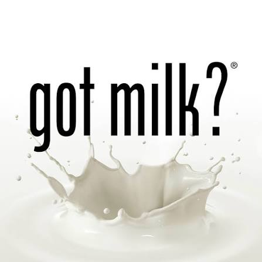

3. Centrarse en los estudiantes (lo más importante)
Dentro de la tradición del marketing de respuesta directa existe una frase muy popular:
“Conoce a tu mercado o no tendrás mercado.”
La frase busca mantener presente una idea que todos entienden pero que es fácil ignorar: para comunicar bien un servicio, primero hay que entender a la persona a la que se intenta llegar.
En el caso del PASE, esto significa que todas las decisiones de marca que se tomen estarán condicionadas por cómo piensan los estudiantes, qué problemas enfrentan, qué les interesa, qué les preocupa y en qué situaciones podrían necesitar alguno de los servicios del programa.
Este es el elemento más importante en cualquier actividad de marketing.
Como bien se ha dicho en los puntos anteriores: nosotros decidimos qué comunicar, pero debemos hacerlo, condicionados y bajo la influencia de lo que piensan los estudiantes.
Esto importa por ejemplo, porque las personas a menudo no usan siempre un lenguaje compatible con la forma de comunicar de las instituciones.
Un ejemplo claro ocurre en Círculos de Estudio. El programa puede decir:
“acompañamiento académico entre pares”.
Mientras que un estudiante puede estar pensando simplemente:
“No entiendo esta materia.”
“Me va a ir mal en los parciales.”
“Necesito que alguien me explique esto.”
“No sé cómo estudiar para este examen.”
Ambas partes pueden estar hablando exactamente del mismo problema, pero utilizando perspectivas distintas.
Por eso, conocer al estudiante permite traducir lo que ofrece el PASE a problemas, necesidades y situaciones que el estudiante reconoce inmediatamente como propias.
La evidencia
Esta idea no depende únicamente de una tradición de marketing.
Existe una amplia línea de investigación académica sobre orientación al mercado, entendida en parte como la capacidad de una organización para comprender suficientemente a sus usuarios y utilizar ese conocimiento para crear mayor valor.
En 1990, John Narver y Stanley Slater estudiaron 140 unidades de negocio y encontraron una relación positiva sustancial entre orientación al mercado y rentabilidad.
Quince años después, Kirca, Jayachandran y Bearden realizaron un metaanálisis mucho más amplio. Reunieron 418 efectos provenientes de 130 muestras independientes y 114 estudios. La investigación encontró una relación positiva entre orientación al mercado y diferentes resultados organizacionales, incluyendo desempeño general, ventas, beneficios, participación de mercado, calidad percibida y lealtad del cliente.
El PASE no es una empresa comercial y su objetivo no es generar rentabilidad. Sin embargo, el principio que puede extraerse de esta evidencia sigue siendo relevante:
Las organizaciones toman mejores decisiones cuando conocen sistemáticamente a las personas para quienes trabajan, en lugar de depender únicamente de suposiciones internas.
Ejemplo real: “Got Milk?”
Uno de los ejemplos más conocidos de cómo conocer al público puede cambiar por completo una estrategia publicitaria ocurrió en California en 1993.
Durante años, la publicidad de la leche había insistido principalmente en sus beneficios nutricionales.
Cuando la California Milk Processor Board contrató a Goodby, Silverstein & Partners, la agencia decidió investigar cómo consumía realmente leche la gente.
Una de las investigaciones consistió en pedir a participantes que pasaran varios días sin consumir leche. La experiencia reveló algo interesante: muchas personas apenas pensaban conscientemente en la leche mientras estaba disponible, pero notaban inmediatamente su ausencia cuando intentaban comer cereal, galletas, mantequilla de maní u otros alimentos que acostumbraban acompañar con ella.
La agencia descubrió así que el problema podía plantearse de otra manera.
En lugar de decir:
“La leche es saludable.”
La campaña dramatizó una situación que el consumidor reconocía:
querer leche precisamente cuando no había leche disponible.
Los resultados fueron importantes. En 1994, las ventas de leche en California aumentaron de aproximadamente 740 a 755 millones de galones, el primer incremento anual en más de una década.

Aplicado al PASE
El mismo razonamiento puede utilizarse antes de diseñar publicidad o modificar la comunicación del PASE.
Por ejemplo, si se quiere aumentar la participación en Círculos de Estudio, antes de decidir el titular de una campaña sería útil investigar:
- ¿Por qué los estudiantes que participan decidieron hacerlo?
- ¿Qué problema tenían antes de acudir?
- ¿Cómo describen ellos ese problema?
- ¿Qué creían que eran los Círculos de Estudio antes de participar?
- ¿Cuándo empieza un estudiante a buscar ayuda con una materia?
Las respuestas pueden cambiar considerablemente la comunicación.
Supongamos, por ejemplo, que una investigación encontrara que muchos estudiantes no utilizan los Círculos de Estudio porque creen que están destinados únicamente a estudiantes que están reprobando.
En ese caso, crear un afiche visualmente más atractivo no resolvería el problema principal.
La publicidad tendría que corregir esa percepción.
De la misma manera, si los estudiantes conocen el servicio pero no saben dónde encontrar los horarios, el problema probablemente no sea de conocimiento de marca, sino de acceso a la información.
Investigar ayuda precisamente a distinguir estos problemas.
Preguntas por responder
Antes de desarrollar una campaña, modificar un servicio o crear una pieza de comunicación del PASE, conviene responder:
¿Qué sabemos realmente sobre los estudiantes a quienes queremos llegar y qué estamos simplemente suponiendo?
Después:
¿Qué problema, necesidad o situación del estudiante queremos resolver?
Y finalmente:
¿Estamos explicando el servicio como lo entiende el PASE o como lo entiende el estudiante?
Referencias
- Narver, J. C., & Slater, S. F. (1990). The Effect of a Market Orientation on Business Profitability. Journal of Marketing, 54(4), 20–35. El estudio analizó 140 unidades de negocio y encontró un efecto positivo sustancial de la orientación al mercado sobre la rentabilidad.
- Kirca, A. H., Jayachandran, S., & Bearden, W. O. (2005). Market Orientation: A Meta-Analytic Review and Assessment of Its Antecedents and Impact on Performance. Journal of Marketing, 69(2), 24–41. Metaanálisis de 114 estudios, 130 muestras independientes y 418 efectos.
- Holt, D. B. got milk? ANA Educational Foundation. Caso histórico sobre el desarrollo de la campaña para la California Milk Processor Board y sus resultados iniciales.
- Daddona, M. (2018). Got Milk? How the iconic campaign came to be, 25 years ago. Fast Company. Describe la investigación de privación realizada por Goodby, Silverstein & Partners antes de desarrollar la campaña.
- Klepacki, L. (1994). California's Milk Plan Winning Sales. Supermarket News. Reportó aproximadamente 80 % de reconocimiento de campaña después de nueve meses y aumentos de ventas de entre 1 % y 3 % según los patrocinadores de la campaña.